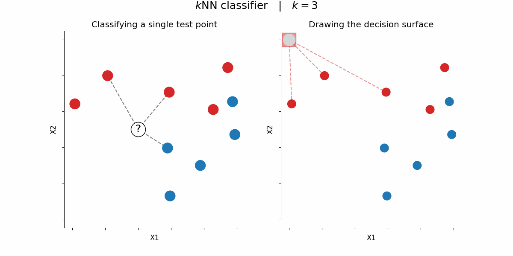

Deep Learning & Robotics taster session
Aston University
Dr Martin Rudorfer
Dr Luis J. Manso
- What is AI?
- Machines able to do things that only humans could (or advanced animals)
- What is machine learning?
- Getting AIs to improve with experience
- Not all AIs learn! Any example?
- What would be an example of a learning algorithm?
- K-nearest neighbours
 CC BY-SA 4.0 (https://commons.wikimedia.org/wiki/File:KNN_decision_surface_animation.gif) - ✓ Extremely simple to understand!
- ✗ Mostly used for classification
- ✗ Does not scale well (data dimensions, samples)
{kind=link}
.T
The artificial neuron!
- Should we give credit to subject X?
- Multiply inputs by a weight; add up; non-linearity
Can we learn an OR function?
Can we learn an XOR function?
We can have much more complex architectures!
Spiral dataset!
- ✗It didn't work very well!
- ✗It would probably converge to a good solution
- ✓ Making the learning more efficient ⇒ DL
- But also, in Deep Learning, we learn how to...
Need less data to train while improving accuracy

{kind=link}
Work with images, graphs, text and audio.
Applications including classification, regression, prediction and generation.
Generative AI